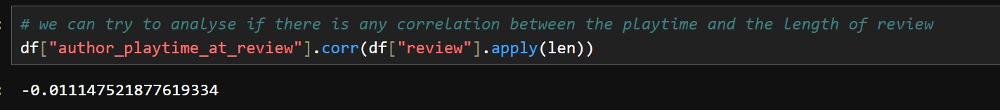

Data Exploration
Data Collection
Our data source was steam reviews which were collected using Steam’s GetAppReviews API. Using the API we fetched 1500 reviews per game, in batches of 100 reviews per API call, for a total of around 45000 reviews to work with. We selected a diverse set of 30 games, both with and without adjustable difficulty settings, from a variety of genres like RPG, shooters, puzzle, simulation, etc. The full list of games is below:
- Elden Ring (RPG/Action)
- Sekiro: Shaodws Die Twice (Action/Adventure)
- Dark Souls Remastered (RPG/Action)
- Armored Core VI: Fires of Rubicon (Mech Combat/Action)
- Hollow Knight (Metroidvania/Platformer)
- Hades (Roguelike/Action)
- Dead Cells (Roguelike/Metroidvania)
- Slay the Spire (Roguelike/Deckbuilding)
- Returnal (Third-Person Shooter/Roguelite)
- Risk of Rain 2 (Action/Roguelike)
- The Witcher 3 (Open World/RPG)
- Mass Effect Legendary Edition (Third-Person Shooter/RPG)
- Divinity: Original Sin 2 (Tactical RPG)
- Baldur's Gate 3 (Turnbased/RPG)
- Pillars of Eternity (Isometric RPG)
- Portal 2 (Puzzle/Platformer)
- The Witness (Puzzle/Exploration)
- Celeste (Platformer/Adventure)
- Ori and the Blind Forest (Platformer/Metroidvania)
- INSIDE (Puzzle/Adventure)
- Stardew Valley (Farming/Life Simulation)
- Factorio (Automation/Management)
- Frostpunk (Survial/City Building)
- The Forest (Survival/Adventure)
- Subnautica (Exploration/Survival)
- Call of Duty: Modern Warfare (Tactical FPS)
- Rocket League (Sports/Competitive)
- Counter-Strike 2 (FPS/Competitive)
- Team Fortress 2 (Multiplayer FPS)
- Dota 2 (MOBA/Competitive)
The API returns the reviews in JSON Format. The raw review data for each game looks something like this:

Data Preprocessing
Reviews from each game were stored in JSON Files. First, we compiled all JSON files into one single pandas dataframe for data preprocessing. Any duplicate or non english records were removed. A field called “author” was a dictionary, which was flattened by appending each of its keys as a separate column in the dataframe. Records without “playtime_at_review” fields were dropped. For our analysis we would only need the columns: "game_name", "review", "voted_up", "timestamp_created", "author_num_games_owned", "author_num_reviews", "author_playtime_at_review", "author_playtime_last_two_weeks" and "author_playtime_forever". Only these relevant columns were kept with others getting discarded. The "review" column was cleaned with all text being converted to lowercase for uniformity, punctuation and non alphanumeric characters were removed using regular expressions. We also filter out reviews with lack of meaningful content. We do this by first checking if the review has "valid words". "Valid words" are defined to be meaningful english words. But some terms which are commonly used in gaming scenarios like "gg", "goty", "despawn", etc. are also added to our set of valid words. However, we cannot manually add all words relevant to the games and there could still be words which are specific to some games and their communities like the word "elden" used in the game Elden Ring. So, we add another check in our validation such that if a word, which isn't already marked valid by our inital check, appears more than 3 times across other reviews is marked as a valid words. With these checks, the reviews are marked as relevant only if atleast 50% of the words are found to be valid. All records with empty or irrelevant reviews after the transformations were dropped with the dataset now having close to 43000 records. The cleaned dataset is stored in a csv which looks like this:

For a detailed walkthrough of our data collection and preprocessing step, you can view our full Jupyter notebook here.
Inital Data Exploration and Visualizations
First we look at some inital data exploration. We load our cleaned reviews dataset into a pandas dataframe df. The columns along with their data types look like this:

We have 9 columns, with game_name and the review being objects (string), the voted_up which indicates if the review was positive or negative being boolean, and all our columns with information about the author of the review being numerical. We can then get a summary of all numerical columns of our dataset:

Some common statistics like the mean, standard deviation and other percentile values for all our numerical columns are displayed. We can then see how many positive and negative reviews we have in total in our dataset.

There around 38600 positive reviews and 4300 negative reviews. Now lets look at some specific columns which are of importance to us. Lets check the average review length.

We can see that people use around 172 characters on average in their reviews. We'll look at the average playtime across all the games in hours played next.

The average playtime of the reviewed games is around 185 hours. So people really spend a lot of time playing games! Lets check if there's any correlation between playing time and review length.
No significant correlation can be found between the review length and time spent playing that game. So its not like people who play games for longer write longer reviews.
Now its time for us to look at some visualizations to a get a better look at our data.
Visualization 1: [Title]
[Brief explanation and insights]
import pandas as pd
# Load the dataset
df = pd.read_csv('game_reviews.csv')
# Display the first few rows
print(df.head())
For a detailed walkthrough of our data exploration process and visualizations, you can view our full Jupyter notebook here.